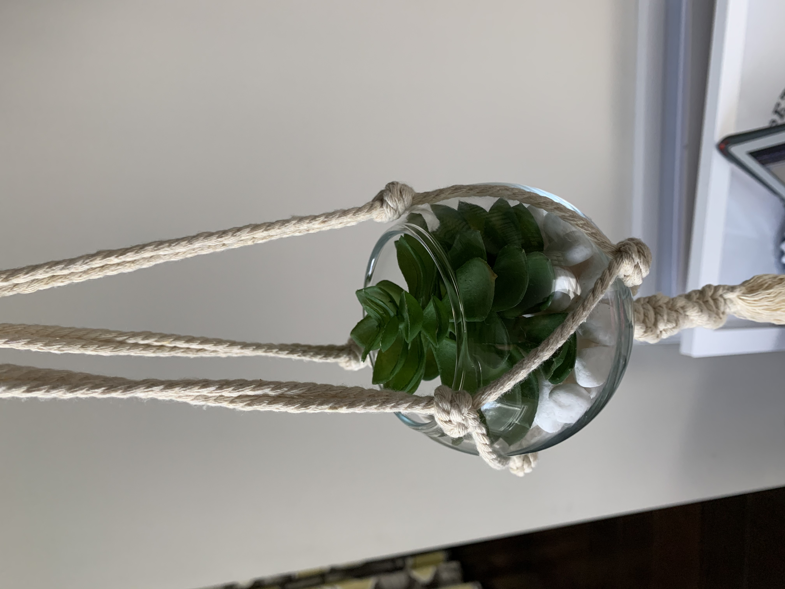
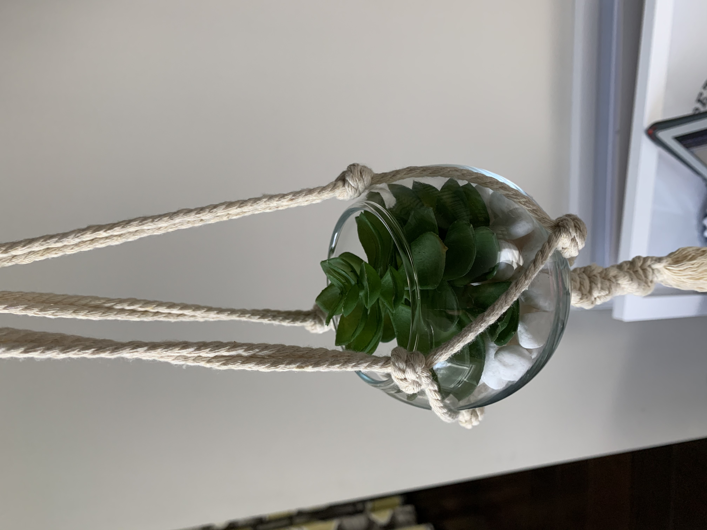
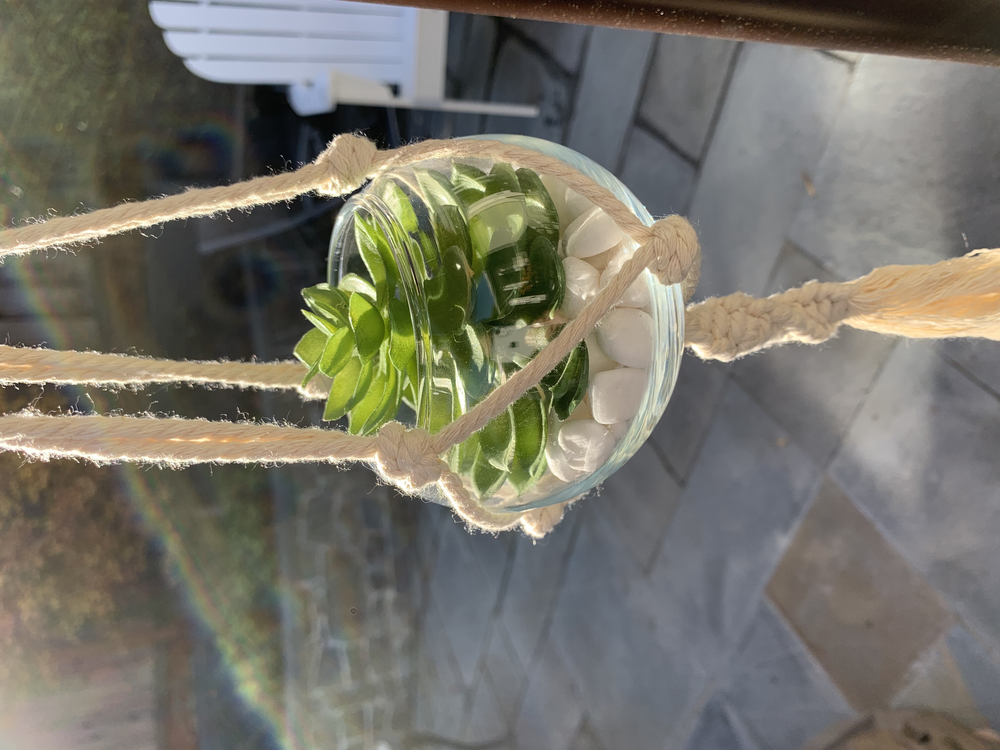
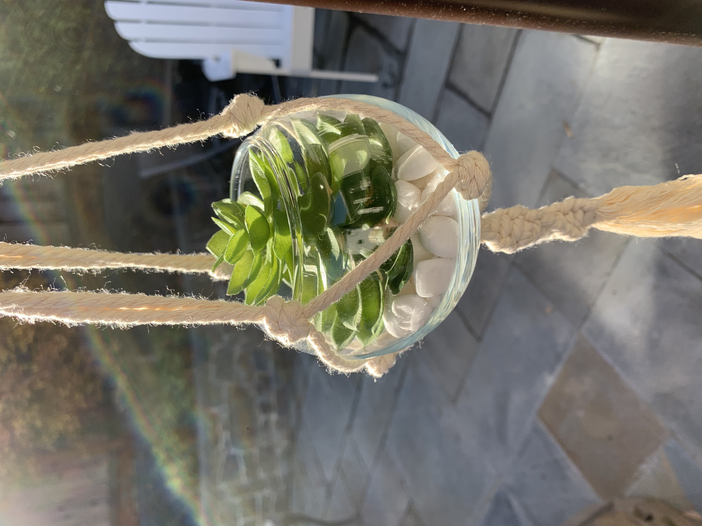

Hi! Our names are Avery, Kaenna and Leah, and we are Everything Succulents! At Everything Succulents, we make macrame terrariums and resin succulents! Our company started within the Entrepreneurial Class at our school, The Girl’s Middle School, where we design products and a company. We wanted our product to be something that could brighten up your day, amidst COVID-19. “What are we all doing right now?” we thought, “Stuck in our rooms of course!”. From there, we decided we wanted a product that could bring some sense of calm to you, amidst these crazy times. What better product than Terrariums and Resin Succulents! They give us all chill and relaxed vibes! We hope you will take a look into our company and products. As a team, we rarely disagree. We collaborate great together, and we are an amazing team.
Our company; Everything Succulents, is everything you would ever need to spadazzle your room. We make macrame terrariums and resin succulents. Our macrame terrariums are glass terrariums that can be hung from your ceiling. They are two feet long, and a little under half a foot wide. The terrariums are made with a base of glass stones or rocks, and a decorative succulent, all inside a jar! The succulents are fake, so you don’t need to remember to water them, woah, what a life-saver! Also, they are small, aesthetic, and perfect decorations to have in your room! The macrame terrariums can be hung for your ceiling, or you can remove the macrame cord, and have it on your desk, or any surface. Our resin succulents are small and cute to put anywhere you want. To make them, we poured the resin liquid into silicone shaped cactus molds, blow-dried them to get out all air bubbles, and sprayed rubbing alcohol on them, to help them dry clear. They are small and can be shown off, on any surface you’d like! These are great items to have in your room because they are small, and can come in any color you want!

 

 
